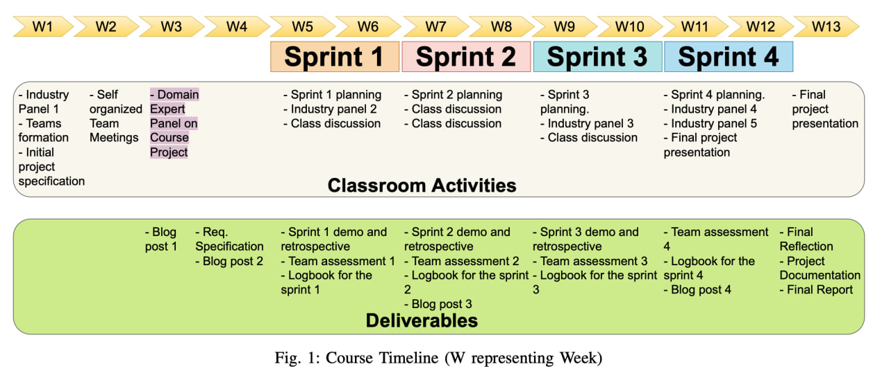

Parte II - Acelerando o Aprendizado
Visão Geral
Uma estratégia eficaz de aprendizagem deve integrar conceitos teóricos com sua aplicação prática, seguindo o princípio de “aprender fazendo”. Sem prática, não há aprendizado significativo. Portanto, o processo de ensino-aprendizagem deve incluir duas etapas fundamentais: sessões de assimilação de conceitos teóricos e sessões de prática.
Embora o uso de casos acadêmicos possa ser útil, ele pode fornecer uma perspectiva limitada e estreita sobre o problema. Por isso, é fundamental preparar os alunos para a realidade do mercado de trabalho, especialmente em setores como desenvolvimento de software, que estão passando por mudanças significativas com a adoção da cultura DevOps. A integração da teoria com a prática permite que os alunos desenvolvam habilidades práticas e estejam prontos para enfrentar desafios reais em suas carreiras.
Esse capítulo é dedicado aos participantes do processo do processo de onboarding com o objetivo de aprender sobre Métodos de Desenvolvimento de Software, mais especificamente aprender os conceitos e práticas relacionados aos métodos ágeis. É a concretização do planejamento realizado na etapa anterior.
Roadmap do Onboard

Recepção + Orientações gerais
A primeira etapa da metodologia envolve ciclos de introdução às informações gerais necessárias para iniciar o projeto, formação das equipes, definição de papéis, escolha de ferramentas e práticas para acolher os participantes. A duração dessa etapa pode variar dependendo da frequência dos encontros. Por exemplo, se houver dois encontros semanais, a primeira etapa pode durar até duas semanas. Já se houver apenas um encontro semanal, a primeira etapa pode durar até um mês.
Objetivo
Acolher novos colaboradores, e apresentar informações sobre a cultura e os processos, além de conhecer os colegas de trabalho.
Propomos sessões práticas focadas no desenvolvimento de projetos Open Source, onde os alunos têm a oportunidade de desenvolver o código-fonte, planejar e automatizar o pipeline de implantação, adotando práticas, ferramentas e orientação da comunidade OSS, conforme descrito na Tabela abaixo.
| Papéis do Aluno | Tech lead, Estrategista de produto, Desenvolvedores, Arquiteto de Software, Engenheiro de DevOps |
| Funções não estudantis (partes interessadas) | Professor, instrutor, cliente (opcional), profissionais de mercado, ex-alunos |
| Releases | 2 Releases (Viabilidade Técnica e Prova de Conceito final) |
| Ponto de Partida | Ideia fornecida aos alunos por qualquer parte interessada |
| Horários de trabalho da equipe | Toda a equipe se reúne 5-8 horas por semana |
| Reuniões | Equipa de estudantes reúne semanalmente com stakeholders |
| Gestão de Projetos do dia-a-dia | Gerenciada pela equipe de estudantes |
| Práticas de Desenvolvimento | Definido por equipe de alunos (Scrum, XP, lean, entre outros) |
| Tecnologias de Desenvolvimento | Selecionada pela equipe de alunos |
| Testes | cobertura de teste de unidade obrigatória de 90%; Teste de integração também são obrigatórios |
| Conjunto de ferramentas DevOps | Selecionado pela equipe de alunos |
| Pipeline | Necessário para a implementação: conteinerização, integração contínua, análise de código estático, conformidade com folhas de estilo, automação de teste, pipeline de implantação automatizada e um modo de ramificação de controle de origem |
| Padrões OSS | Padrões da comunidade OSS devem ser adotados |
É interessante destacar que essa abordagem de deixar os alunos lutarem e procurarem informações por conta própria faz parte do modelo de aprendizagem experiencial de David Kolb, que valoriza a autodescoberta e a aprendizagem autônoma como elementos-chave para o processo de aprendizagem. O curso não fornece um plano detalhado para a entrega final do projeto, o que se assemelha aos projetos de software reais. Essa decisão central é deixada para as equipes, o que lhes permite exercitar suas habilidades de gestão e decisão, além de incentivar a colaboração com outras equipes, mentores e professores. Isso inclui a definição de processos, conjunto de ferramentas, pipeline de entrega, automação, ambiente de execução, monitoramento, atribuição de tarefas, entregas, treinamento da equipe, entre outros aspectos. Aprender com base na experiência é mais importante e benéfico do que uma abordagem puramente teórica, pois evidencia como os conceitos técnicos e não técnicos estão interconectados e ambos impactam a entrega final. Vários alunos relataram a dificuldade inicial em tomar decisões e a insegurança de não ter uma lista de tarefas pré-definida. No entanto, eles reconheceram a importância da tomada de decisão para compreender os elementos que impactam a entrega contínua.
Além disso, ao apresentar os entregáveis esperados em macro atividades, permite-se que os alunos tenham liberdade para definir seus próprios caminhos e desenvolver suas habilidades não técnicas, o que pode ser extremamente valioso para sua formação como desenvolvedores. Nessa etapa são desenvolvidas várias habilidades não técnicas, como comunicação efetiva, auto aprendizagem, gestão de horas, gestão des conflitos, agir mesmo com pouca informação. Esse setup é bastante próximo de início de projetos no mercado.
Papéis
Cada aluno desempenha um papel único em uma equipe DevOps, que se assemelha a uma equipe de produto, com a responsabilidade coletiva de “Você construiu, você executa”.
As funções, suas responsabilidades e entregas são as seguintes:
- Scrum Master/Tech Leader: Responsável pela execução de conceitos e práticas de gerenciamento de projetos. Entregáveis esperados incluem documentação de processo, métricas de produtividade e análise e avaliação contínuas da maturidade das práticas ágeis da equipe.
- Estrategista de Produto: Responsável pela execução de conceitos e práticas de gestão de produto. Essa função deve descrever as personas do usuário, como o produto se encaixa no mercado atual e como atingirá as metas de negócios. Entregáveis esperados incluem planos de produtos, roteiro, plano de negócios, testes de usabilidade e identidade visual do produto.
- Arquiteto de Software: Responsável pela execução de conceitos e práticas de gerenciamento de produtos e categorias de processo de construção. Essa função lida com o aplicativo e seu fluxo de dados definindo estruturas, ferramentas e tecnologias. Entregáveis esperados incluem definição e documentação de arquitetura, seleção de linguagem de programação, uso de serviços externos (Open Source), reutilização de funcionalidades e integração de serviços e definição de critérios de qualidade.
- Engenheiro de Release/DevOps: Responsável pela execução de conceitos e práticas das categorias de integração contínua, automação de implantação e monitoramento e registro. Essa função define os estágios do pipeline de implantação, as ferramentas de automação, configura esse pipeline nos ambientes de preparação e produção. Entregáveis esperados incluem documentação, implementação de estágios de pipeline, automação de implantação contínua e testes automatizados. Monitorar o ambiente de produção é opcional.
- Equipe de Desenvolvimento: Implementa o backlog do produto em funcionalidade potencialmente entregável seguindo tecnologias estabelecidas e critérios de qualidade. Entregáveis esperados incluem o código-fonte do projeto, testes de unidade, comunicação via problemas e execução de práticas de software de código aberto.
- Professor: Auxilia no gerenciamento de riscos, apresenta conceitos teóricos relacionados ao DevOps e facilita a comunicação com outras partes interessadas.
- Instrutor: Auxilia a equipe com treinamento e feedback sobre ferramentas, tecnologias e melhores práticas no desenvolvimento de produtos de software de código aberto. Eles ajudam na cultura de colaboração e compartilham suas lições aprendidas.
É dada aos alunos total autonomia para auto-organização, para que pudessem experimentar trabalhar em um ambiente similar a empresas. Os alunos recebem total autonomia para decidir como querem organizar suas equipes. A maioria dos alunos se destaca com a autonomia total e elogiou o aspecto de autoaprendizagem do curso. Como um aluno explicou: “A diferença crucial neste curso que o destaca de todas as outras ofertas de cursos na universidade é a imensa mudança em direção à autoaprendizagem e independência de uma equipe de ensino/apoio. A quantidade de trabalho necessária rapidamente aumentou de um sprint para o próximo - o que significou que eu precisava explorar novas abordagens para aprender e, mais importante, colaborar com os outros”.
Tópicos/Temas de projetos
Os temas do projeto são apresentados no primeiro dia e sugeridos por praticantes, ex-alunos e potenciais clientes, dando às equipes autonomia para escolher o escopo do projeto, a stack tecnologica, a arquitetura de software e as ferramentas de automação.
Com o objetivo de simular a experiência de múltiplas equipes da indústria, o projeto deste ano envolveu a concepção e implementação de um software de agendamento de cursos universitários para o departamento de Engenharia de Software e Ciência da Computação da nossa universidade, utilizando práticas Scrum. Apesar de parecer um projeto simples, considerou-se que ambos os departamentos não possuíam atualmente um programa de agendamento de cursos.
As restrições do projeto são importantes para limitar o escopo do projeto, estabelecer os critérios e checklist de avaliação, orientar o planejamento, execução e priorização das tarefas. Elas também ajudam os instrutores a avaliar continuamente os riscos do projeto e dar feedback constante às equipes, de acordo com os limites definidos pelas restrições. A comunidade OSS tem uma série de padrões recomendados com foco na construção de comunidades acolhedoras. Essas práticas visam manter normas, qualidade de código, padrões técnicos, comunicação, disseminação de conhecimento, conscientização da equipe, compartilhamento de propriedade e dar boas-vindas continuamente aos novos membros. Não abordamos neste trabalho os critérios detalhados de avaliação dos alunos. Baseados fortemente nas comunidades e padrões OSS, definimos um conjunto de restrições de projeto para orientar a tomada de decisão dos alunos:
- Ambientes: cada equipe deve ter ambientes de teste e produção disponíveis;
- Padrões OSS: os padrões da comunidade OSS devem ser adotados. Padronização e problemas de modelo, modelo de branch de controle de origem, documentação do projeto, pipeline de implantação, comunicação de problemas e feedback em Pull Requests são exemplos de padrão OSS;
- Ciclos de entrega: existem dois lançamentos oficiais significativos no curso, nos quais as equipes apresentam suas soluções a um conselho de avaliação.
Práticas Obrigatórias
| Categorias | Conceitos | Práticas |
|---|---|---|
| Gestão de Produto (Processo/Pessoas) | Microservice; Product quality; Customer satisfaction; Small features; Artifact management; Release engineering; Knowledge, Skills, and Capabilities; Programing educations; Quality assurance; and Artifact management. | OSS Documentation standards; unit test; review; licensing; pair revision and code review; architecture structure; product documentation; and pipeline stage documentation. |
| Gestão de Projetos (Processo/Pessoas) | Gestão de pessoas; Short feedback cycle; Pilots team and lead customer; Compliance regulations; Team experience; Aligning incentives; Breaking down silos; Culture of collaboration; Versioning; Sharing knowledge; Programing educations; Global community knowledge; Failure as opportunity of improvement; ollaborate across departments; Knowledge, skills, and capabilities; and Artifact management. | Sprint; Kanban; planing; review; Stand-up metting; dojos; Tasks in issues; training; OSS Recommended Standards; Post mortem; code of contributing; Communication in issue and PR; Full-stack and self organized teams; git-flow; pull request; process documentation; badges status in readme; tracking metrics; and pair revision. |
| Processo de Build (Entrega) | Release engineering; Continuous delivery; Automation; Testing automation; Correctness; and Static analysis. | Deployment pipeline stages; Automation; Unit test; Integration tests; and components tests. |
| Integração Contínua (Entrega) | Frequent and reliable release process; Release engineering; Deployment pipeline; Continuous integration; Automation; and Continuous delivery. | Build and deploy automated; badges status in readme; and git-flow. |
| Deployment Contínua (Entrega/Runtime) | Frequent and reliable release process; Release engineering; Continuous delivery; Configuration management; Automation; Infrastructure as code; Virtualization; and Containerization. | Git-flow; Continuous Integration; Build and Deploy automated; Architecture Structure; Documentation; and pipline stage documentation. |
| Monitoramento & Logging (Entrega/Runtime) | You built it, you run it; Availability; After-hours support for Devs; Alerting; Continuous runtime monitoring; Security; Performance; Automation Metrics; Experiments Log management; Reliability; and Scalability Resilience. | Operation tasks in issues; Logging; Monitoring; and Benchmark. |
Entregáveis
Embora o foco principal do curso fosse o desenvolvimento do projeto para avaliar o resultado da aprendizagem, foram estabelecidos alguns outros entregáveis ao longo do período. A lista de entregáveis inclui:
- Documento de especificação de requisitos (Roadmap, StoryMap)
- Planejamento, demonstração e retrospectiva para cada sprint
- Revisão por pares para cada sprint
- Logbook para cada sprint
- 4 postagens de blog reflexivas baseadas em leituras obrigatórias
- Documentação do projeto de acordo com padrões de Software Livre e relatório final (Release notes)
- Apresentação final
O logbook, ou diário de bordo, é uma ferramenta utilizada para cada aluno registrar as atividades realizadas pelos durante cada sprint, bem como o número de horas dedicadas a cada uma delas. Essa prática permite uma melhor gestão do tempo e das atividades, além de facilitar o monitoramento do progresso individual de cada estudante.
Na última semana, cada equipe é solicitada a apresentar uma demonstração ao vivo da solução para o cliente e realizar uma apresentação final. Além disso, cada equipe escreve um relatório final contendo todas as decisões de projeto, suposições e resultados obtidos.
Timeline do projeto
A metodologia apresentada pode ser aplicada em vários timelines.
Comunicação
Um elemento central das metodologias ágeis é uma comunicação efeitva. Essa mesma comunicação efetiva é adotada por comunidades de software livre. Para isso, as práticas e cultura de comunicação efetiva deve ser estimulado e respeitado desde o primeiro encontro.
Uma comunicação efetiva começa por estabelecer os canais de comuncação e o tipo de comunicação se dar por cada canal. Por exemplo, se há um canal específico de dar informes, ele não deve ser usado para tirar dúvidas ou compartilhar informações relacionados ao projeto. Aqui vão os principais tipos de comunicação adotados por comunicades de software livre e empresas:
- Issues: qualquer tarefa relacionada ao projeto deve ser documentada como uma issue. Se alguma decisão sobre uma issue é tomada (por exemplo em um pareamento, reunião), essa decisão deve ser posteriormente documentada na issue. A escrita das issues devem ser padronizadas para facilitar a compreensão de newcomers e acompanhamento do projeto. Por isso para cada tipo de issue (tarefa, User Story, Epico, etc) é necessário um template adequado. A issue é o principal canal de comunicação assincrona da equipe de desenvolvimento.
- Canal de comunicação por squad: cada squad/time deve escolher seu próprio canal de comunicação, seja o slack, servidor discord, grupo telegram/whatsapp. Normalmente esses canais servem para comunicações rápidas, coloquiais.
- Canal de comunicação geral: gerido pelo professor/gestor, esse canal reune participantes, instrutores, mentores e clientes. Aqui são trocadas mensagens sobre andamento do projeto, informes gerais, alinhamento de datas/artefatos de entrega.
- Canal de dúvidas: canal gerido pelos instrutores e squads para tirar dúvidas técnicas, pedido de análise dos artefatos, agendamento de treinamento sob demanada.
- Repositório: Toda a documentação técnica para comunicar artefatos de projeto devem ser compoartilhado em um repositório aberto, seguindo os templates, boas práticas e organização de comunidades de software livre.
Checklist
Segue um checklist para ajudar na organização do evento de recepção:
- Definir dos dias/horários/local dos encontros semanais
- Apresentar a visão geral do processo de onboarding
- Apresentar as listas de Entregáveis para a Release I e Release II
- Definir as datas da Release I e Release II
- Definir as equipes/squads
- Definir os canais de comunicação (Comunicação rápida/informes, dúvidas, decisões, tarefas)
- Definir dias/horários/locais de disponibilidades dos instrutores
- Definir dias/horários/locais dos treinamentos
- Compartilhar os repositórios de projetos passados
- Garantir que todos os participantes tem todos acessos necessários (repositório, lista de e-mails, Discord, etc)
- Garantir que todos os participantes tenham os contatos dos instrutores
Segue um checklist para ajudar na organização da primeira etapa do onboarding para o professor/mentor.
- Apresentar o ciclo de vida de projetos de software
- Apresentar práticas de gestão de equipes ágeis - Scrum
- Apresentar práticas de documentação ágil - issues, templates de issues, comunicação de issues
- Apresentar o conceito de timebox e exercitar em atividades síncronas
- Organizar um evento para que os clientes possam apresentar os problemas a serem resolvidos com software
Segue um checklist para ajudar na organização da primeira etapa do onboarding para os instrutores.
- Compartilhar o contato
Segue um checklist para as equipes.
Acompanhamento + feedback contínuo
A medição da produtividade das equipes de software é uma tarefa complexa e desafiadora. Em primeiro lugar, a própria noção de produtividade pode ser subjetiva e variar de pessoa para pessoa. Mesmo quando se estabelecem parâmetros de referência e métricas, a percepção da produtividade por um engenheiro de software pode ser diferente daquela de um executivo ou membro do conselho.
No desenvolvimento de software, a produtividade não se resume apenas ao volume de código escrito ou à ausência de erros. Existem muitos outros fatores que podem influenciar a produtividade da equipe, como a qualidade do código, a eficiência do processo de desenvolvimento, a colaboração entre membros da equipe, o uso de ferramentas e tecnologias apropriadas, entre outros.
Portanto, para medir adequadamente a produtividade de uma equipe de software, é essencial ter uma compreensão abrangente e holística do processo de desenvolvimento, bem como das necessidades e objetivos da empresa. Além disso, é importante ter uma abordagem flexível e adaptável, que possa se ajustar às mudanças nas prioridades e demandas do projeto. Somente assim será possível obter uma visão precisa e útil da produtividade da equipe.
É verdade que métricas como Deployment Frequency, Cycle Time, Pull Request Throughput, Code Activity e Lead Time podem ser úteis para medir a produtividade das equipes de software. No entanto, é importante lembrar que essas métricas não são a única forma de medir a produtividade e podem não ser suficientes por si só.
Existem muitos outros fatores que podem afetar a produtividade da equipe de software, como a qualidade do código, a eficiência da comunicação e colaboração entre os membros da equipe, a utilização de boas práticas de desenvolvimento de software, a adoção de tecnologias e ferramentas modernas, entre outros.
Compreender o trabalho invisível e o impacto que ele tem na produtividade da equipe é crucial para o sucesso de um projeto de software. Quando esse trabalho é ignorado ou subestimado, pode haver uma lacuna significativa entre as expectativas das partes interessadas e a realidade do trabalho da equipe de desenvolvimento.
Isso pode levar a problemas de comunicação e compreensão, resultando em frustração, mal-entendidos e atrasos no projeto. Além disso, a falta de reconhecimento e valorização do trabalho invisível pode levar à rotatividade de colaboradores, pois a equipe pode sentir-se desmotivada e subestimada.
Cabe à liderança da empresa reconhecer e valorizar o trabalho invisível realizado pela equipe de software, comunicar de forma clara e transparente com as partes interessadas do negócio e garantir que haja um entendimento mútuo das expectativas e dos objetivos do projeto. Isso pode ser alcançado através de uma comunicação frequente e efetiva entre a equipe de desenvolvimento de software e as partes interessadas, bem como pelo estabelecimento de um ambiente de trabalho colaborativo e inclusivo.
Ao reconhecer e valorizar o trabalho invisível e promover uma cultura de comunicação aberta e transparente, a liderança pode ajudar a minimizar a lacuna entre as expectativas das partes interessadas e a realidade do trabalho da equipe de software, promovendo um ambiente de trabalho mais saudável e produtivo e impulsionando o crescimento do negócio.
A maturidade no desenvolvimento de software é um conceito que se refere à capacidade da equipe de software de entregar um produto de alta qualidade, confiável e seguro de maneira consistente e previsível. Isso implica ter processos de desenvolvimento de software bem definidos, testes automatizados e uma cultura de qualidade e melhoria contínua.
Por outro lado, a produtividade no desenvolvimento de software se concentra no ritmo e eficiência do trabalho da equipe, medindo a capacidade de produzir resultados de maneira rápida e eficaz. Isso inclui métricas como a quantidade de trabalho concluído em um determinado período de tempo, a rapidez com que as alterações de código são implementadas e a frequência com que o software é distribuído para o usuário final.
Equipes de alto desempenho em desenvolvimento de software devem reconhecer a importância de investir tempo em apoiar outras atividades que são vitais para o sucesso do projeto, mesmo que não envolvam diretamente alterações de código ou mudanças visíveis aos usuários. Essas atividades podem incluir a melhoria contínua dos processos de desenvolvimento,
Alguns exemplos podem incluir:
- Acompanhamento e avaliação de métricas de qualidade e desempenho do software;
- Análise de dados e feedback dos usuários para orientar a tomada de decisões de desenvolvimento;
- Realização de testes de integração e testes automatizados;
- Gerenciamento de configuração de software e controle de versão;
- Participação em treinamentos e desenvolvimento profissional;
- Colaboração com outras equipes ou departamentos da empresa, como equipes de operações, marketing e vendas, para garantir a integração efetiva do software no ambiente de negócios.
https://caroli.org/medir-a-produtividade-em-equipes-de-software-vai-alem-de-olhar-apenas-o-volume-de-codigo-produzido-voce-precisa-do-coeficiente-de-produtividade/
Práticas
The labs on the other hand, consisted of sprint activities such as planning, demo and retrospectives
Sessões Teóricas
Durante o curso, os alunos participaram de aulas teóricas, palestras e painéis de discussão sobre tópicos como: habilidades críticas de engenharia de software, regras não ditas para iniciar sua carreira, coordenação e comunicação, gestão do conhecimento, cultura e confiança. Nos painéis, eles tem a oportunidade de compartilhar suas experiências de trabalho no projeto e aprender com os painelistas da indústria.
Além disso, os alunos são desafiados a escrever reflexões em postagens de blog, conectando os tópicos com suas experiências e projetos. Por exemplo, eles poderiam escrever sobre como a coordenação e a comunicação foram importantes para o sucesso do projeto de programação de cursos. Essas atividades ajudaram os alunos a refletir sobre suas habilidades e conhecimentos e a aplicá-los no contexto do projeto.
Entregáveis + avaliação
Checklist
Segue um checklist para ajudar na organização do evento de recepção:
- Definir dos dias/horários/local dos encontros semanais
- Apresentar a visão geral do processo de onboarding
- Apresentar as listas de Entregáveis para a Release I e Release II
- Definir as datas da Release I e Release II
- Definir as equipes/squads
- Definir os canais de comunicação (Comunicação rápida/informes, dúvidas, decisões, tarefas)
- Definir dias/horários/locais de disponibilidades dos instrutores
- Definir dias/horários/locais dos treinamentos
- Compartilhar os repositórios de projetos passados
- Garantir que todos os participantes tem todos acessos necessários (repositório, lista de e-mails, Discord, etc)
- Garantir que todos os participantes tenham os contatos dos instrutores
Segue um checklist para ajudar na organização da primeira etapa do onboarding para o professor/mentor.
- Apresentar o ciclo de vida de projetos de software
- Apresentar práticas de gestão de equipes ágeis - Scrum
- Apresentar práticas de documentação ágil - issues, templates de issues, comunicação de issues
- Apresentar o conceito de timebox e exercitar em atividades síncronas
- Organizar um evento para que os clientes possam apresentar os problemas a serem resolvidos com software
Segue um checklist para ajudar na organização da primeira etapa do onboarding para os instrutores.
Parte III - Melhoria Contínua
Retrospectiva e pontos de melhoria
Checklist
Segue um checklist para ajudar na organização do evento de recepção:
- Definir dos dias/horários/local dos encontros semanais
- Apresentar a visão geral do processo de onboarding
- Apresentar as listas de Entregáveis para a Release I e Release II
- Definir as datas da Release I e Release II
- Definir as equipes/squads
- Definir os canais de comunicação (Comunicação rápida/informes, dúvidas, decisões, tarefas)
- Definir dias/horários/locais de disponibilidades dos instrutores
- Definir dias/horários/locais dos treinamentos
- Compartilhar os repositórios de projetos passados
- Garantir que todos os participantes tem todos acessos necessários (repositório, lista de e-mails, Discord, etc)
- Garantir que todos os participantes tenham os contatos dos instrutores
Segue um checklist para ajudar na organização da primeira etapa do onboarding para o professor/mentor.
- Apresentar o ciclo de vida de projetos de software
- Apresentar práticas de gestão de equipes ágeis - Scrum
- Apresentar práticas de documentação ágil - issues, templates de issues, comunicação de issues
- Apresentar o conceito de timebox e exercitar em atividades síncronas
- Organizar um evento para que os clientes possam apresentar os problemas a serem resolvidos com software
Segue um checklist para ajudar na organização da primeira etapa do onboarding para os instrutores.